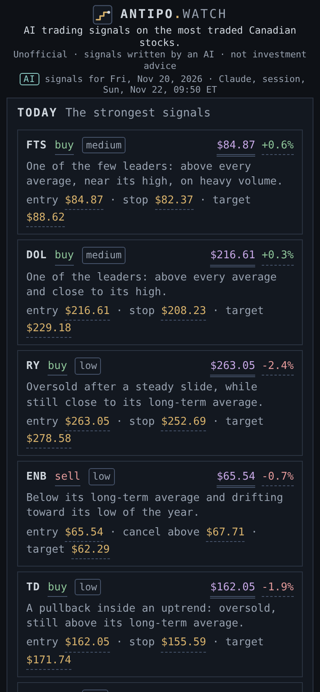
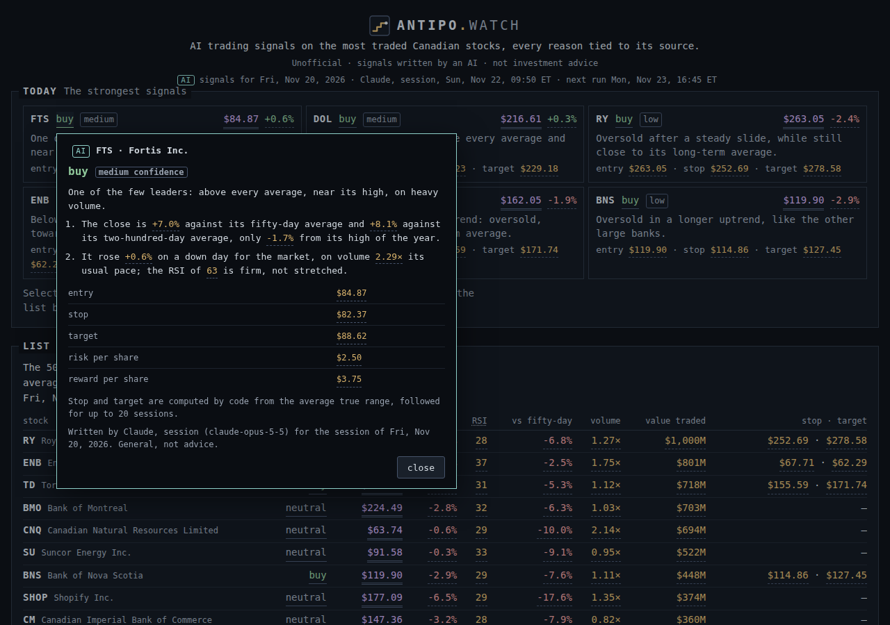
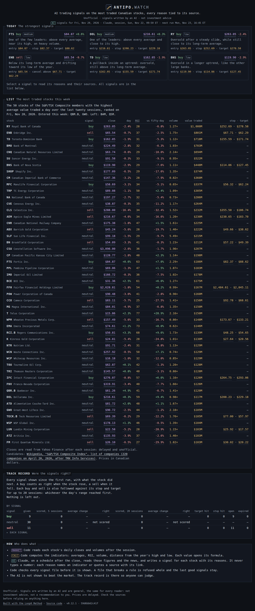

Loop 011 — Fifty stocks, stops and targets
2026-11-22 · The top 50 of the S&P/TSX Composite, a stop and a target from ATR on every buy and sell, a track record that says which came first; ANT leaves the scanner; the documents brought up to date. Versions 0.12.0 and 0.12.1.
Why
What kind of trading do we do with this? I'd like more stocks, a bigger list. Not day trading but short to medium term. I'd use a margin account with monthly fees. We could put a login on the portal if needed.
The owner's words, reworded in English. Answers: top 50 of the Composite; stops and targets; a login (deferred, D-046).
What changed



- Fifty stocks from 220 candidates, ranked weekly by value traded.
- Stop at 2 × ATR, target at 3 × ATR from the entry close, followed 20 sessions; a day that reaches both counts as the stop. A sell means exit or avoid.
- ROUTINE.md: the steps of the daily run.
- ANT out of the scanner; the IPO page stays at
/ant, unlinked. - A lesson: a signal file pushed before its code was live was refused by the old release; no signals showed for about ten minutes. Code first, then the file.
Checks
| Check | Result | Evidence |
|---|---|---|
| Unit tests | passed | 185; ATR, stops, targets and which came first by hand. |
| Real-browser tests | passed | 16 local; the applicable ones live. |
| Deployment | passed | Built with the site up; release 59d6bb62c41f. |
| The owner saw screenshots before release | passed | "Oui go". |
| A run with nobody in the session | not run | GitHub not connected yet. |